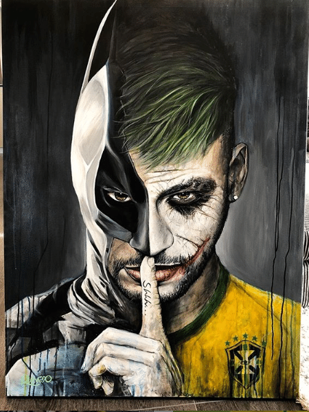
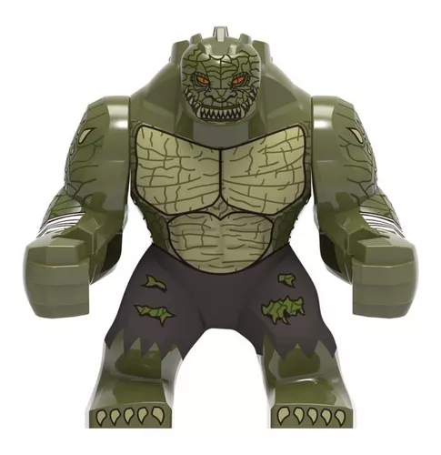
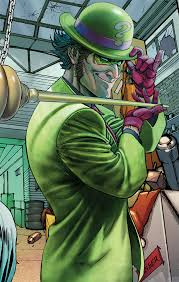
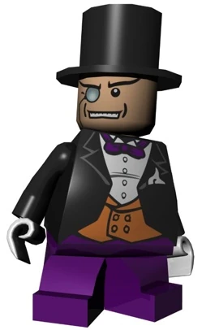
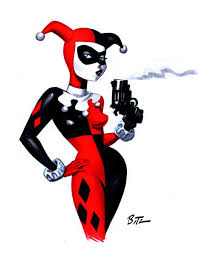

Vilões do Batman
-

Coringa: Denominando-se "O Príncipe Palhaço do Crime", ele começou a cometer uma série de crimes cruéis, em que qualquer lógica deixava de existir. Ao longo dos anos, Batman sempre conseguiu frustrar seus planos, iniciando um ciclo vicioso que é típico da maioria dos vilões dos quadrinhos: o Coringa cometia um crime, Batman o prendia no Asilo Arkham, ele fugia para aprontar mais uma e ser preso novamente. Isso desenvolveu um grande laço de ódio entre o herói e o criminoso.
-

Waylon Jones (Crocodilo) : Vitima de uma doença rara que deixara sua pele coberta de escamas, e a aparência de um réptil. Vítima desde a infância de seu triste visual, sempre foi vítima de humilhações, chacotas e olhares assustados de todos que o viam. Waylon não conseguia emprego com aquela aparência, chegando a ter que lutar com crocodilos em circo em troca de dinheiro para sobreviver. Acabou sendo levado a cometer crimes..
-

Charada: Edward Nashton, ou Edward Nigma, o Charada é um homem que adora planejar um crime e enviar pistas sobre seus futuros atos em forma de enigmas para a polícia, que, obviamente, as repassa ao Batman. E. Nigma descobriu sua fascinação por quebra-cabeças e charadas ainda na infância, quando trapaceou em um concurso para ganhar um prêmio na escola. Na ocasião, ganharia o prêmio quem montasse um quebra-cabeças mais rapidamente e, na noite anterior à competição, Ed conseguiu fotografá-lo, tornando sua tarefa muito mais fácil. Esse gosto por enigmas e trapaças foi crescendo na medida em que ele amadurecia, de forma que se tornar um trapaceiro profissional foi apenas questão de tempo.
-

Duas Caras: Harvey Dent era um promotor de Gotham City que forjou uma aliança com o então tenente (e mais tarde, capitão e finalmente, comissário) da polícia James Gordon e o Batman para limpar as ruas da cidade. Essa aliança acabou de maneira trágica quando o chefe Moroni, um gângster local, jogou ácido na cara de Harvey durante seu julgamento, deformando metade do rosto do promotor e deixando a outra metade intacta.
-

Penguim: Oswald ingressou na faculdade, formando-se em ornitologia, a ciência que estuda os pássaros. Apesar da vida razoável que levava, Oswald carregava consigo muita raiva acumulada desde a infância e, quando isso explodiu, passou a usar seus conhecimentos em ornitologia para cometer crimes, adotando o infame apelido que recebera na infância. Para tal, passou a usar os pássaros e uma série de guarda-chuvas adaptados que podem ser convertidos em metralhadoras, lança-chamas, espadas, esconder hélices a motor, lançar gás, ácido e trazer uma série de outros recursos.
-

Alerquina: Uma anti-heroína e interesse romântico de Batman, com habilidades de ladrã e uma relação complicada com o herói.